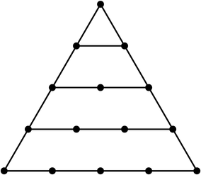
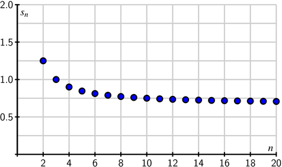
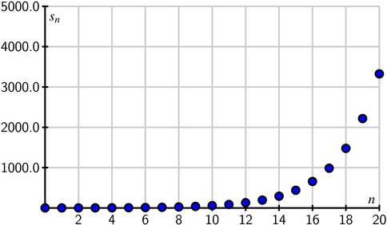
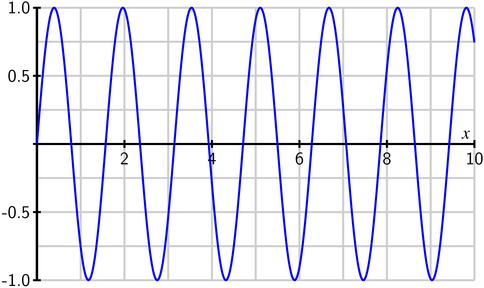

{In this section, we strive to understand the ideas generated by the following important questions:
What is a sequence?
What does it mean for a sequence to converge?
What does it mean for a sequence to diverge?
}
Subsection8.1.1Introduction
We encounter sequences every day. Your monthly rent payments, the annual interest you earn on investments, a list of your car's miles per gallon every time you fill up; all are examples of sequences. Other sequences with which you may be familiar include the Fibonacci sequence\knownindex{\lt main>Fibonacci sequence\lt /main>}
\[
1, 1, 2, 3, 5, 8, \ldots
\]
in which each entry is the sum of the two preceding entries and the triangular numbers\knownindex{\lt main>triangular numbers\lt /main>}
\[
1, 3, 6, 10, 15, 21, 28, 36, 45, 55, \ldots
\]
which are numbers that correspond to the number of vertices seen in the triangles in Figure 8.1.1.
Figure8.1.1Triangular numbers
Sequences of integers are of such interest to mathematicians and others that they have a journal 1 The Journal of Integer Sequences at \url{http://www.cs.uwaterloo.ca/journals/JIS/} devoted to them and an on-line encyclopedia 2 The On-Line Encyclopedia of Integer Sequences at \url{http://oeis.org/} that catalogs a huge number of integer sequences and their connections. Sequences are also used in digital recordings and digital images.
To this point, most of our studies in calculus have dealt with continuous information (e.g., continuous functions). The major difference we will see now is that sequences model discrete instead of continuous information. We will study ways to represent and work with discrete information in this chapter as we investigate sequences and series, and ultimately see key connections between the discrete and continuous.
Preview Activity
Suppose you receive \(\dollar5000\) through an inheritance. You decide to invest this money into a fund that pays \(8\%\) annually, compounded monthly. That means that each month your investment earns \(\frac{0.08}{12} \cdot P\) additional dollars, where \(P\) is your principal balance at the start of the month. So in the first month your investment earns
\[
5000 \left(\frac{0.08}{12}\right)
\]
or \(\dollar33.33\). If you reinvest this money, you will then have \(\dollar5033.33\) in your account at the end of the first month. From this point on, assume that you reinvest all of the interest you earn.
How much interest will you earn in the second month? How much money will you have in your account at the end of the second month?
Complete Table 8.1.2 to determine the interest earned and total amount of money in this investment each month for one year.
Month \amp Interest earned \amp Total amount of money in the account
0 \amp \(\dollar0\) \amp \(\dollar5000.00\)
1 \amp \(\dollar33.33\) \amp \(\dollar5033.33\)
2 \amp \amp
3 \amp \amp
4 \amp \amp
5 \amp \amp
6 \amp \amp
7 \amp \amp
8 \amp \amp
9 \amp \amp
10 \amp \amp
11 \amp \amp
12 \amp \amp Figure8.1.2Interest
As we will see later, the amount of money \(P_n\) in the account after month \(n\) is given by
\[
P_n = 5000\left(1+\frac{0.08}{12}\right)^{n}.
\]
Use this formula to check your calculations in Table 8.1.2. Then find the amount of money in the account after 5 years.
How many years will it be before the account has doubled in value to $10000?
Subsection8.1.2Sequences
\knownindex{\lt main>sequence\lt /main>}
As our discussion in the introduction and Preview Activity illustrate, many discrete phenomena can be represented as lists of numbers (like the amount of money in an account over a period of months). We call these any such list a sequence. In other words, a sequence is nothing more than list of terms in some order. To be able to refer to a sequence in a general sense, we often list the entries of the sequence with subscripts,
\[
s_1, s_2, \ldots, s_n \ldots,
\]
where the subscript denotes the position of the entry in the sequence. More formally,
Definition8.1.3
A sequence is a list of terms \(s_1, s_2, s_3, \ldots\) in a specified order.
As an alternative to Definition 8.1.3, we can also consider a sequence to be a function \(f\) whose domain is the set of positive integers. In this context, the sequence \(s_1\), \(s_2\), \(s_3\), \(\ldots\) would correspond to the function \(f\) satisfying \(f(n) = s_n\) for each positive integer \(n\). This alternative view will be be useful in many situations.
We will often write the sequence
\[
s_1, s_2, s_3, \ldots
\]
using the shorthand notation \(\{s_n\}\). The value \(s_n\) (alternatively \(s(n)\)) is called the \(n\)th term\knownindex{\lt main>sequence\lt /main>\lt sub>term\lt /sub>} in the sequence. If the terms are all 0 after some fixed value of \(n\), we say the sequence is finite. Otherwise the sequence is infinite. We will work with both finite and infinite sequences, but focus more on the infinite sequences. With infinite sequences, we are often interested in their end behavior and the idea of convergent sequences.
Let \(s_n\) be the \(n\)th term in the sequence \(1, 2, 3, \ldots\).
Find a formula for \(s_n\) and use appropriate technological tools to draw a graph of entries in this sequence by plotting points of the form \((n,s_n)\) for some values of \(n\). Most graphing calculators can plot sequences; directions follow for the TI-84.
In the MODE menu, highlight SEQ in the FUNC line and press ENTER.
In the Y= menu, you will now see lines to enter sequences. Enter a value for \(n\)Min (where the sequence starts), a function for \(u(n)\) (the \(n\)th term in the sequence), and the value of \(u_{n\text{Min} }\).
Set your window coordinates (this involves choosing limits for \(n\) as well as the window coordinates XMin, XMax, YMin, and YMax.
The GRAPH key will draw a plot of your sequence.
Using your knowledge of limits of continuous functions as \(x \to \infty\), decide if this sequence \(\{s_n\}\) has a limit as \(n \to \infty\). Explain your reasoning.
Let \(s_n\) be the \(n\)th term in the sequence \(1, \frac{1}{2}, \frac{1}{3}, \ldots\). Find a formula for \(s_n\). Draw a graph of some points in this sequence. Using your knowledge of limits of continuous functions as \(x \to \infty\), decide if this sequence \(\{s_n\}\) has a limit as \(n \to \infty\). Explain your reasoning.
Let \(s_n\) be the \(n\)th term in the sequence \(2, \frac{3}{2}, \frac{4}{3}, \frac{5}{4}, \ldots\). Find a formula for \(s_n\). Using your knowledge of limits of continuous functions as \(x \to \infty\), decide if this sequence \(\{s_n\}\) has a limit as \(n \to \infty\). Explain your reasoning.
By observation we see that a formula for \(s_n\) is \(s_n = n\). A plot of the first 50 points in the sequence is shown here.
We recalling that a function \(f\) has a limit \(L\) at infinity if we can make the values of \(f(x)\) as large as we want by choosing \(x\) as large as we need. Since we can make the values of \(n\) in our sequence as large as we want by choosing \(n\) to be as large as we need, we suspect that this sequence does not have a limit as \(n\) goes to infinity.
By observation we see that a formula for \(s_n\) is \(s_n = \frac{1}{n}\). A plot of the first 50 points in the sequence is shown here.
Since we can make the values of \(\frac{1}{n}\) in our sequence as close to 0 as we want by choosing \(n\) to be as large as we need, we suspect that this sequence has a limit of 0 as \(n\) goes to infinity.
Since the numerator is always 1 more than the denominator, a formula for \(s_n\) is \(s_n = \frac{n+1}{n}\). A plot of the first 50 points in the sequence is shown here.
Since we can make the values of \(\frac{n+1}{n}\) in our sequence as close to 1 as we want by choosing \(n\) to be as large as we need, we suspect that this sequence has a limit of 1 as \(n\) goes to infinity.
Recall our earlier work with limits involving infinity in Section 2.8. State clearly what it means for a continuous function \(f\) to have a limit \(L\) as \(x \to \infty\).
Given that an infinite sequence of real numbers is a function from the integers to the real numbers, apply the idea from part (a) to explain what you think it means for a sequence \(\{s_n\}\) to have a limit as \(n \to \infty\).
Based on your response to (b), decide if the sequence \(\left\{ \frac{1+n}{2+n}\right\}\) has a limit as \(n \to \infty\). If so, what is the limit? If not, why not?
A continuous function \(f\) has a limit \(L\) as the independent variable \(x\) goes to infinity if we can make the values of \(f(x)\) as close to \(L\) as we want by choosing \(x\) as large as we need.
We expect that a sequence \(\{s_n\}\) will have a limit \(L\) as \(n\) goes to infinity if we can make the entries \(s_n\) in the sequence as close to \(L\) as we want by choosing \(n\) as large as we need.
As \(n\) gets large, the constant terms become infinitesimally small compared to \(n\) and so \(\frac{1+n}{2+n}\) looks like \(\frac{n}{n}\) or 1 for large \(n\). So the sequence \(\left\{ \frac{1+n}{2+n}\right\}\) has a limit of 1 at infinity.
In Activities 8.1.4 and 8.1.5 we investigated the notion of a sequence \(\{s_n\}\) having a limit as \(n\) goes to infinity. If a sequence \(\{s_n\}\) has a limit as \(n\) goes to infinity, we say that the sequence converges\knownindex{\lt main>converge\lt /main>\lt sub>sequence\lt /sub>} or is a convergent sequence\knownindex{\lt main>convergent sequence\lt /main>}. If the limit of a convergent sequence is the number \(L\), we use the same notation as we did for continuous functions and write
\[
\lim_{n \to \infty} s_n = L.
\]
If a sequence \(\{s_n\}\) does not converge then we say that the sequence \(\{s_n\}\) diverges\knownindex{\lt main>diverge\lt /main>\lt sub>sequence\lt /sub>}. Convergence of sequences is a major idea in this section and we describe it more formally as follows.
{
A sequence \(\{s_n\}\) of real numbers converges to a number \(L\) if we can make all values of \(s_k\) for \(k \ge n\) as close to \(L\) as we want by choosing \(n\) to be sufficiently large.
}
Remember, the idea of sequence having a limit as \(n \to \infty\) is the same as the idea of a continuous function having a limit as \(x \to \infty\). The only new wrinkle here is that our sequences are discrete instead of continuous.
We conclude this section with a few more examples in the following activity.
Use graphical and/or algebraic methods to determine whether each of the following sequences converges or diverges.
\(\left\{\frac{1+2n}{3n-2}\right\}\)
\(\left\{\frac{5+3^n}{10+2^n}\right\}\)
\(\left\{\frac{10^n}{n!}\right\}\) (where \(!\) is the factorial symbol and \(n! = n(n-1)(n-2) \cdots (2)(1)\) for any positive integer \(n\) (as convention we define \(0!\) to be 1)).
A plot of the first 50 terms of the sequence \(\left\{\frac{1+2n}{3n-2}\right\}\) is shown here.
\resizebox{!}{1.75in}{ }
The plot implies that the sequence has a limit between 0.5 and 1. For large \(n\) the \(2n\) term dominates the numerator and the \(3n\) term the denominator. So \(\frac{1+2n}{3n-2}\) looks like \(\frac{2n}{3n} = \frac{2}{3}\) when \(n\) is big. So the sequence \(\left\{\frac{1+2n}{3n-2}\right\}\) converges to \(\frac{2}{3}\).
A plot of the first 50 terms of the sequence \(\left\{\frac{5+3^n}{10+2^n}\right\}\) is shown here.
\resizebox{!}{1.75in}{ }
The plot implies that the sequence does not have a limit as \(n\) goes to infinity. For large \(n\) the \(3^n\) term dominates the numerator and the \(2^n\) term the denominator. So \(\frac{5+3^n}{10+2^n}\) looks like \(\frac{3^n}{2^n} = \left(\frac{3}{2}\right)^n\) when \(n\) is big. Since \(\frac{3}{2} > 1\), the sequence \(\left\{\frac{5+3^n}{10+2^n}\right\}\) diverges to infinity.
A plot of the first 50 terms of the sequence \(\left\{\frac{10^n}{n!}\right\}\) is shown here.
\resizebox{!}{1.75in}{ }
Initially, it looks as though the terms increase without bound, but beginning at about \(n=10\) the factorial in the denominator dominates the numerator. Notice that
\[
\frac{10^n}{n!} = \frac{10 \times 10 \times 10 \times \cdots \times 10}{1 \times 2 \times 3 \times \cdots n}
\]
When \(n > 20\), we have that \(\frac{10}{n} \lt \frac{1}{2}\) and
\begin{align*}
\frac{10^n}{n!} \amp = \left(\frac{10 \times 10 \times 10 \times \cdots \times 10}{1 \times 2 \times 3 \times \cdots 20}\right) \left(\frac{10 \times 10 \times 10 \times \cdots \times 10}{21 \times 22 \times 23 \times \cdots n}\right)\\
\amp = \left(\frac{10^{20}}{20!}\right) \left(\frac{10}{21}\right) \left(\frac{10}{22}\right) \cdots \left(\frac{10}{n}\right)\\
\amp \lt \left(\frac{10^{20}}{20!}\right) \left(\frac{1}{2}\right)^{n-20}.
\end{align*}
Since \(\frac{1}{2}\lt 1\), the term \(\left(\frac{1}{2}\right)^{n-20}\) goes to 0 as \(n\) goes to infinity. The fact that \(\frac{10^{20}}{20!}\) is a constant means that \(\frac{10^n}{n!} \to 0\) as \(n \to \infty\).
\vfill
\item A sequence is a list of objects in a specified order. We will typically work with sequences of real numbers and can also think of a sequence as a function from the positive integers to the set of real numbers.
\item A sequence \(\{s_n\}\) of real numbers converges to a number \(L\) if we can make every value of \(s_k\) for \(k \ge n\) as close as we want to \(L\) by choosing \(n\) sufficiently large.
\item A sequence diverges if it does not converge.
\hrulefill
\begin{exercises}
\item Finding limits of convergent sequences can be a challenge. However, there is a useful tool we can adapt from our study of limits of continuous functions at infinity to use to find limits of sequences. We illustrate in this exercise with the example of the sequence
\[
\frac{\ln(n)}{n}.
\]
Calculate the first 10 terms of this sequence. Based on these calculations, do you think the sequence converges or diverges? Why?
For this sequence, there is a corresponding continuous function \(f\) defined by
\[
f(x) = \frac{\ln(x)}{x}.
\]
Draw the graph of \(f(x)\) on the interval \([0,10]\) and then plot the entries of the sequence on the graph. What conclusion do you think we can draw about the sequence \(\left\{\frac{\ln(n)}{n}\right\}\) if \(\lim_{x \to \infty} f(x) = L\)? Explain.
Note that \(f(x)\) has the indeterminate form \(\frac{\infty}{\infty}\) as \(x\) goes to infinity. What idea from differential calculus can we use to calculate \(\lim_{x \to \infty} f(x)\)? Use this method to find \(\lim_{x \to \infty} f(x)\). What, then, is \(\lim_{n \to \infty} \frac{\ln(n)}{n}\)?
\item We return to the example begun in Preview Activity to see how to derive the formula for the amount of money in an account at a given time. We do this in a general setting. Suppose you invest \(P\) dollars (called the principal) in an account paying \(r\%\) interest compounded monthly. In the first month you will receive \(\frac{r}{12}\) (here \(r\) is in decimal form; e.g., if we have \(8\%\) interest, we write \(\frac{0.08}{12}\)) of the principal \(P\) in interest, so you earn
\[
P\left(\frac{r}{12}\right)
\]
dollars in interest. Assume that you reinvest all interest. Then at the end of the first month your account will contain the original principal \(P\) plus the interest, or a total of
Given that your principal is now \(P_1\) dollars, how much interest will you earn in the second month? If \(P_2\) is the total amount of money in your account at the end of the second month, explain why
\[
P_2 = P_1\left( 1 + \frac{r}{12}\right) = P\left( 1 + \frac{r}{12}\right)^2.
\]
Find a formula for \(P_3\), the total amount of money in the account at the end of the third month in terms of the original investment \(P\).
There is a pattern to these calculations. Let \(P_n\) the total amount of money in the account at the end of the third month in terms of the original investment \(P\). Find a formula for \(P_n\).
\item Sequences have many applications in mathematics and the sciences. In a recent paper 3 Hui H, Farilla L, Merkel P, Perfetti R. The short half-life of glucagon-like peptide-1 in plasma does not reflect its long-lasting beneficial effects, Eur J Endocrinol 2002 Jun;146(6):863-9. the authors write
The incretin hormone glucagon-like peptide-1 (GLP-1) is capable of ameliorating glucose-dependent insulin secretion in subjects with diabetes. However, its very short half-life (1.5-5 min) in plasma represents a major limitation for its use in the clinical setting.
The half-life of GLP-1 is the time it takes for half of the hormone to decay in its medium. For this exercise, assume the half-life of GLP-1 is 5 minutes. So if \(A\) is the amount of GLP-1 in plasma at some time \(t\), then only \(\frac{A}{2}\) of the hormone will be present after \(t+5\) minutes. Suppose \(A_0 = 100\) grams of the hormone are initially present in plasma.
Let \(A_1\) be the amount of GLP-1 present after 5 minutes. Find the value of \(A_1\).
Let \(A_2\) be the amount of GLP-1 present after 10 minutes. Find the value of \(A_2\).
Let \(A_3\) be the amount of GLP-1 present after 15 minutes. Find the value of \(A_3\).
Let \(A_4\) be the amount of GLP-1 present after 20 minutes. Find the value of \(A_4\).
Let \(A_n\) be the amount of GLP-1 present after \(5n\) minutes. Find a formula for \(A_n\).
Does the sequence \(\{A_n\}\) converge or diverge? If the sequence converges, find its limit and explain why this value makes sense in the context of this problem.
Determine the number of minutes it takes until the amount of GLP-1 in plasma is 1 gram.
\item Continuous data is the basis for analog information, like music stored on old cassette tapes or vinyl records. A digital signal like on a CD or MP3 file is obtained by sampling an analog signal at some regular time interval and storing that information. For example, the sampling rate of a compact disk is 44,100 samples per second. So a digital recording is only an approximation of the actual analog information. Digital information can be manipulated in many useful ways that allow for, among other things, noisy signals to be cleaned up and large collections of information to be compressed and stored in much smaller space. While we won't investigate these techniques in this chapter, this exercise is intended to give an idea of the importance of discrete (digital) techniques.
Let \(f\) be the continuous function defined by \(f(x) = \sin(4x)\) on the interval \([0,10]\). A graph of \(f\) is shown in Figure 8.1.7.
Figure8.1.7The graph of \(f(x) = \sin(4x)\) on the interval \([0,10]\)
We approximate \(f\) by sampling, that is by partitioning the interval \([0,10]\) into uniform subintervals and recording the values of \(f\) at the endpoints.
Ineffective sampling can lead to several problems in reproducing the original signal. As an example, partition the interval \([0,10]\) into 8 equal length subintervals and create a list of points (the sample) using the endpoints of each subinterval. Plot your sample on graph of \(f\) in Figure Figure 8.1.7. What can you say about the period of your sample as compared to the period of the original function?
The sampling rate is the number of samples of a signal taken per second. As part (a) illustrates, sampling at too small a rate can cause serious problems with reproducing the original signal (this problem of inefficient sampling leading to an inaccurate approximation is called aliasing). There is an elegant theorem called the Nyquist-Shannon Sampling Theorem that says that human perception is limited, which allows that replacement of a continuous signal with a digital one without any perceived loss of information. This theorem also provides the lowest rate at which a signal can be sampled (called the Nyquist rate) without such a loss of information. The theorem states that we should sample at double the maximum desired frequency so that every cycle of the original signal will be sampled at at least two points.
Recall that the frequency of a sinusoidal function is the reciprocal of the period. Identify the frequency of the function \(f\) and determine the number of partitions of the interval \([0,10]\) that give us the Nyquist rate.
Humans cannot typically pick up signals above 20 kHz. Explain why, then, that information on a compact disk is sampled at 44,100 Hz.